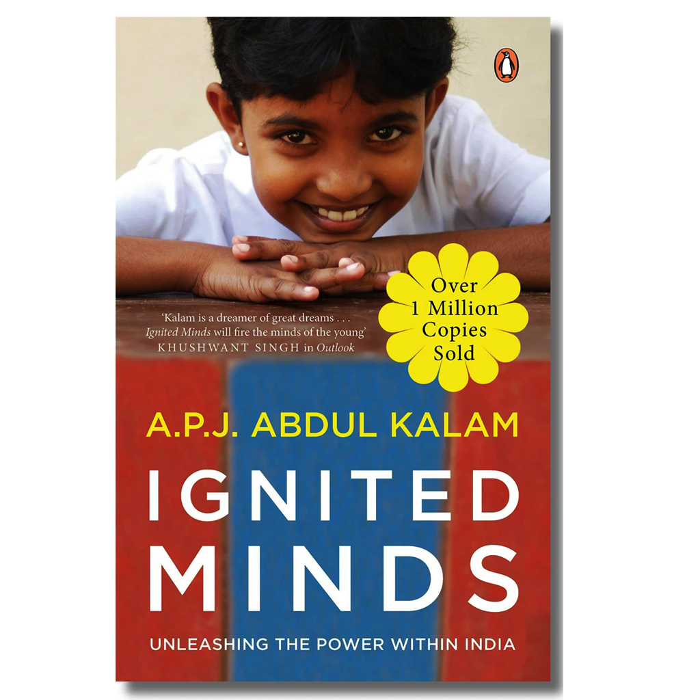
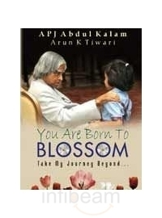
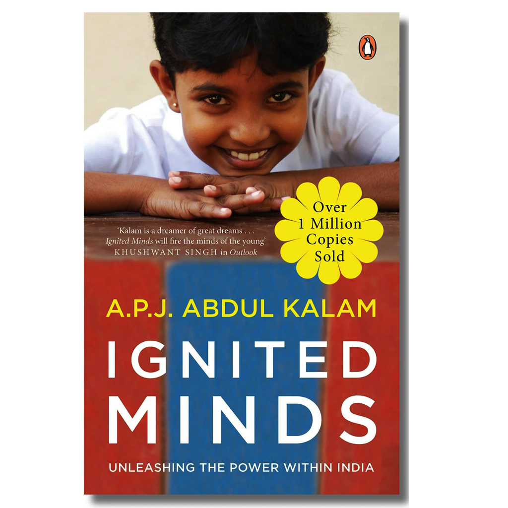
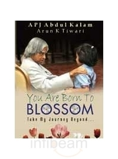
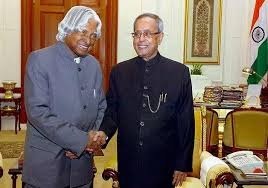
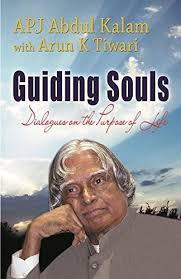
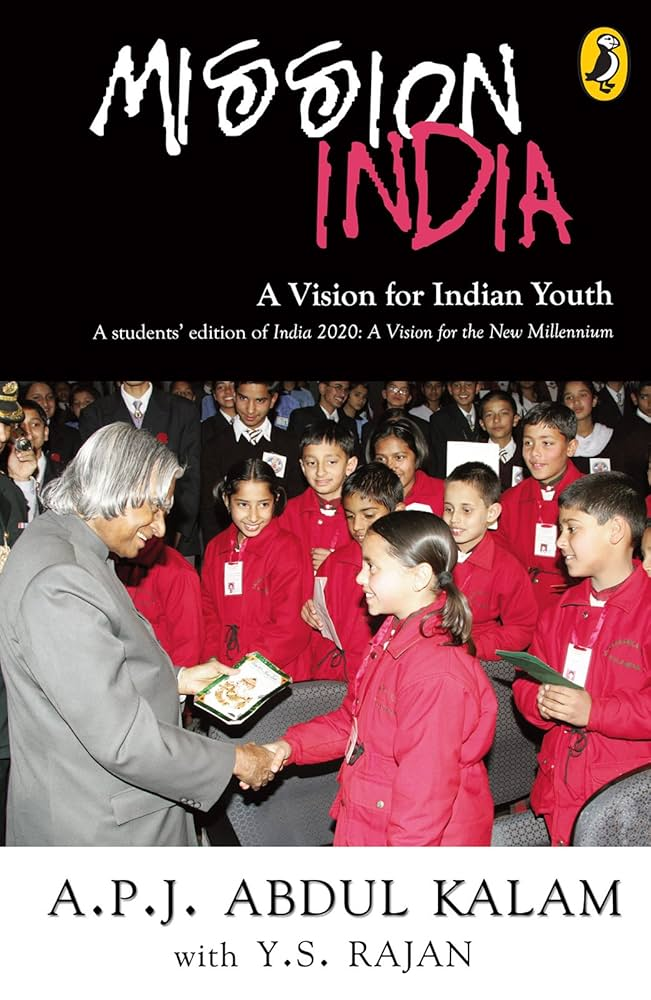

 
  A.P.J. Abdul Kalam, born on October 15, 1931, in Rameswaram, Tamil Nadu, was an Indian scientist and statesman who served as the 11th President of India from 2002 to 2007. He is widely known as the "Missile Man of India" for his work in developing India's missile technology and played a crucial role in the country's civilian space program and nuclear weapons development. Avul Pakir Jainulabdeen Abdul Kalam ,15 October 1931 – 27 July 2015 was an Indian aerospace scientist and statesman who served as the president of India from 2002 to 2007.
Born and raised in a Muslim family in Rameswaram, Tamil Nadu, Kalam studied physics and aerospace engineering. He spent the next four decades as a scientist and science administrator, mainly at the Defence Research and Development Organisation (DRDO) and Indian Space Research Organisation (ISRO) and was intimately involved in India's civilian space programme and military missile development efforts. He was known as the "Missile Man of India" for his work on the development of ballistic missile and launch vehicle technology. He also played a pivotal organisational, technical, and political role in Pokhran-II nuclear tests in 1998, India's second such test after the first test in 1974.
Kalam was elected as the, president of India in 2002 with the support of both the ruling Bharatiya Janata Party and the then-opposition Indian National Congress. He was widely referred to as the "People's President". He engaged in teaching, writing and public service after his presidency. He was a recipient of several awards, including the Bharat Ratna, India's highest civilian honour.
After graduating from the Madras Institute of Technology in 1960, Kalam became a member of the Defence Research & Development Service and joined the Aeronautical Development Establishment of the Defence Research and Development Organisation (DRDO) as a scientist. During his early career, he was involved in the design of small hovercraft, and remained unconvinced by his choice of a job at DRDO. Later, he joined the Indian National Committee for Space Research, working under renowned space scientist Vikram Sarabhai.He was interviewed and recruited into Indian Space Research Organisation (ISRO) by H. G. S. Murthy, the first director of the Thumba Equatorial Rocket Launching Station. In 1969, Kalam transferred to ISRO where he became the project director of India's first satellite launch vehicle (SLV) which successfully deployed the Rohini satellite in near-earth orbit in July 1980
In May 1974, Kalam was invited by Raja Ramanna to witness the country's first nuclear test Smiling Buddha as the representative of Terminal Ballistics Research Laboratory, even though he was officially not part of the project. In the 1970s, Kalam directed two projects, Project Devil and Project Valiant, which sought to develop ballistic missiles using the technology from the successful SLV programme. Despite the disapproval of the union cabinet, then Prime Minister Indira Gandhi allotted funds for these aerospace projects under Kalam's directorship through her discretionary powers.

On 10 June 2002, the National Democratic Alliance which was in power at the time, expressed its intention to nominate Kalam for the post of the president of India.His candidature was backed by the opposition parties including the Samajwadi Party and the Nationalist Congress Party. After the support for Kalam, incumbent president K. R. Narayanan chose not to seek a re-election. Kalam said of the announcement of his candidature:
"I am really overwhelmed. Everywhere both in Internet and in other media, I have been asked for a message. I was thinking what message I can give to the people of the country at this juncture "
On 18 June, Kalam filed his nomination papers in the Indian Parliament, accompanied by then prime minister Atal Bihari Vajpayee and senior cabinet members. He faced off against Lakshmi Sahgal, and the polling for the presidential election was held on 15 July 2002, in the Indian parliament and the state assemblies, with the media predicting a win for Kalam. The counting was held on 18 July, and Kalam won the elections after securing 922,884 electoral votes as against the 107,366 votes won by Sahgal. He was sworn in as the 11th president of India on 25 July 2002. He was the first scientist and the first bachelor to occupy the top chair at Rashtrapati Bhawan.
On 27 July 2015, Kalam travelled to Shillong to deliver a lecture on "Creating a Livable Planet Earth" at IIM Shillong. While climbing a flight of stairs, he experienced some discomfort, but was able to enter the auditorium after a brief rest.At around 6:35 p.m. IST, after five minutes into his lecture, he collapsed. He was rushed to the nearby Bethany Hospital in a critical condition, and upon arrival, he lacked a pulse or any other signs of life. Despite being placed in the intensive care unit, he was confirmed dead of a sudden cardiac arrest at 7:45 p.m. His purported last words to his aide Srijan Pal Singh were: "Funny guy! Are you doing well?"
Wings of Fire: An Autobiography (1999) Ignited Minds: Unleashing the Power within India (2002) You Are Born to Blossom: Take My Journey Beyond (2010)
 
India 2020: A Vision for the New Millennium (1998) Guiding Souls: Dialogues on the Purpose of Life (2005) Mission India: A Vision for Indian Youth (2005)